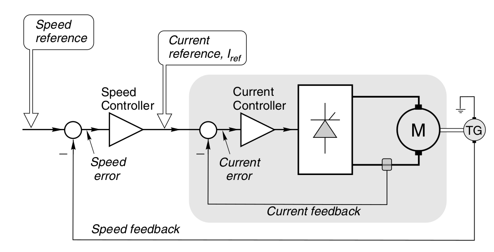
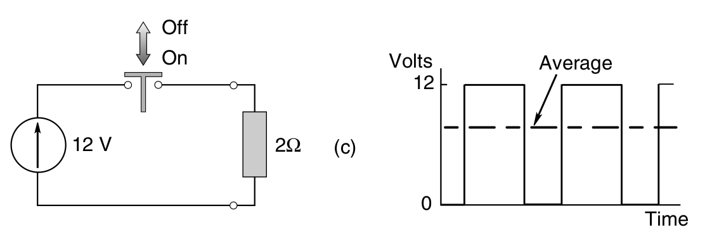
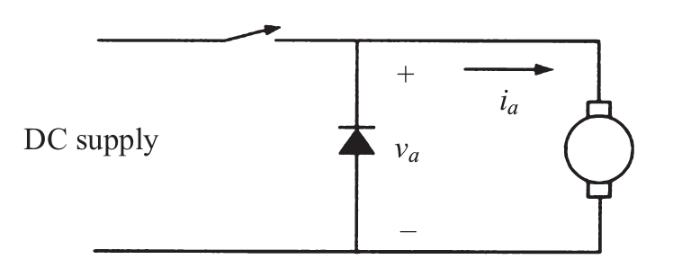
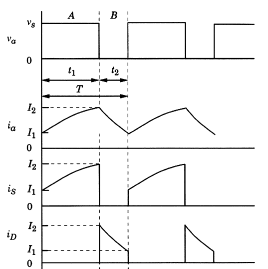
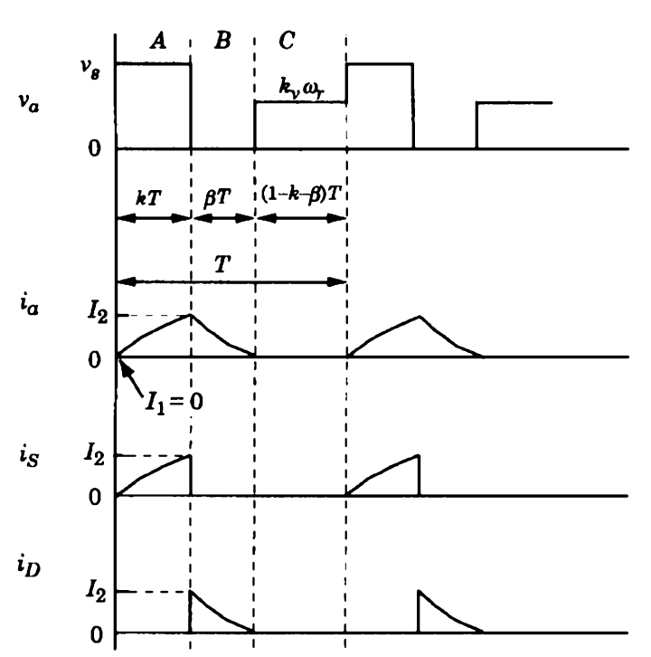
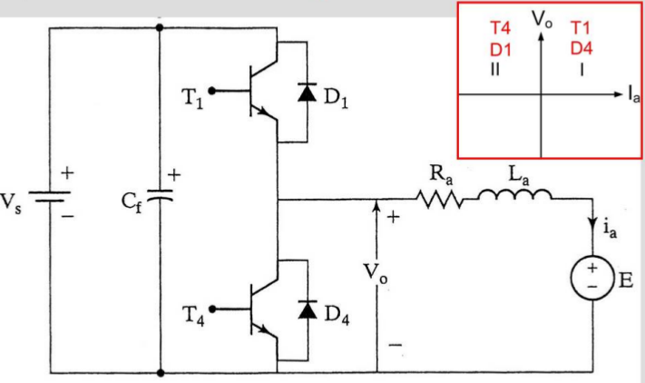
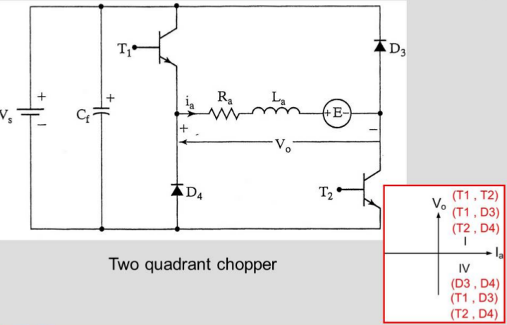
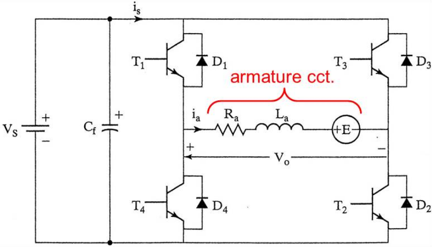
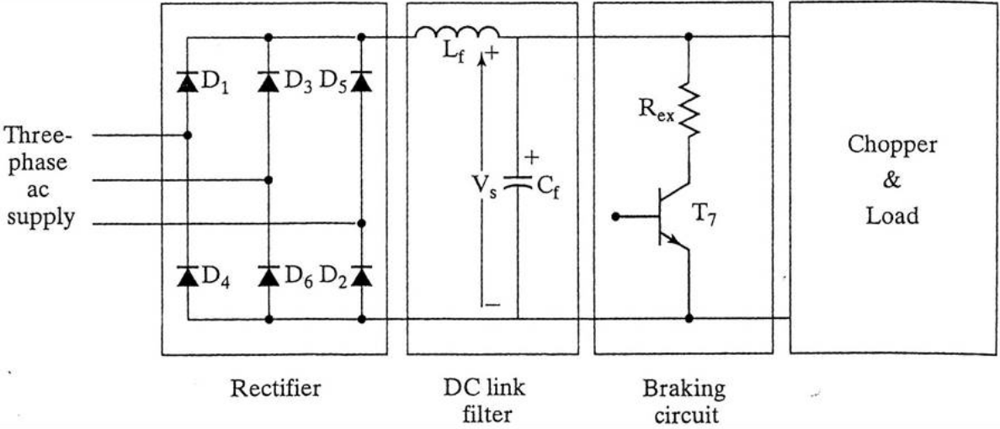

class: center, middle # EE-462 UTILIZATION OF ELECTRICAL ENERGY # DC Motor Drives ## Ozan Keysan ## [keysan.me](http://keysan.me) ### Office: C-113 <span class="meta">•</span> Tel: 210 7586 --- # Motor Drives -- ## Torque Control (Current Control) ## Speed Control --- # Motor Drives  --- # Motor Drives <img src="./images/ee462/motor_drive_control2.png" alt="Drawing" style="width: 600px;"/> --- # DC Motor Drives wrt Supply -- # DC/DC Drives -- # AC/DC Drives -- # 3Ph AC/DC Drives --- #DC/DC Drives: Simplest PWM Generator  -- ## A few definitions: ### D: duty cycle, fs: switching frequency, T: period --- #DC/DC Drives: Simplest PWM Generator ## \\(V\_{dc}= \dfrac{t\_{on}}{T}V\_s = D V\_s\\) --- #DC/DC Drives: Simplest PWM Generator ### What is the problem with this configuration as a DC motor drive? -- ### Inductive Load! Solution: add a frewheeling diode --- #One-Quadrant DC Motor Drive ## Chopper with Freewheeling Diode  --- #One-Quadrant DC Motor Drive ### Forward Motoring Mode -- ### \\(V_s = L_a \dfrac{di_a}{dt}+R_a i_a + E_a\\) -- ### Frewheeling Mode ### \\(0 = L_a \dfrac{di_a}{dt}+R_a i_a + E_a\\) --- #One-Quadrant DC Motor Drive --  ### Continuous Mode of Operation --- #One-Quadrant DC Motor Drive -- #### Armature time constant: \\(\tau_a =\dfrac{L_a}{R_a}\\) -- #### Forward Motoring Mode: ###\\(i_a(t) = I_1 e^{(-t/\tau_a)}+ \dfrac{V_s-E_a}{R_a} (1- e^{(-t/\tau_a)})\\) -- ### If \\(T<<\tau_a\\), using Taylor series approximation: ###\\(i_a(t) \approx I_1 (1- \dfrac{t}{\tau_a}) + \dfrac{V_s-E_a}{L_a} t\\) --- ### Freewheeling Mode: -- The magnitude of current at the beginning of the freewheeling cycle: ###\\(I_2 = I_1 e^{(-dt/\tau_a)}+ \dfrac{V_s-E_a}{R_a} (1- e^{(-dT/\tau_a)})\\) -- ###\\(i_a(t) = I_2 e^{(-t/\tau_a)} - \dfrac{E_a}{R_a} (1- e^{(-t/\tau_a)})\\) -- #### If \\(T<<\tau_a\\), using Taylor series approximation: ###\\(i_a(t) \approx I_2 (1- \dfrac{t}{\tau_a}) - \dfrac{E_a}{L_a} t\\) --- ## Continuous Mode of Operation ### Reading for Derivations [Ch10](http://onlinelibrary.wiley.com/book/10.1002/9781118524336) ### Current Ripple: \\(\Delta I = I_2 - I_1\\) ### Current Ripple: \\(\Delta I = \dfrac{V_s}{R_a} \Bigg[\dfrac{1-e^{-dT/\tau_a} + e^{-T/\tau_a} - e ^{-(1-d)T/\tau_a}}{1-e^{-T/\tau_a}}\Bigg]\\) -- ### Max. current ripple occurs when: -- \\(d=0.5\\) -- ### Max. ripple \\(\approx \dfrac{V_s}{R_a}tanh(\dfrac{T}{4\tau_a})\\) --- ## Discontinuous Mode -- ## Discontinuous conduction may occur when: -- ## - Ea is high -- ## - Load is light (small Ia) -- ## - T is long (small switching frequency) -- ## - \\(\tau_a\\) is small (low inductance) --- ## Discontinuous Mode ## Group Exercise: -- # Plot Ia, Is, Id, Va --- ## Discontinuous Mode  --- ## Discontinuous Mode ### \\(\beta = \dfrac{\tau_a}{T} ln (\dfrac{V_s-E_a}{E_a} (1-e^{-dT/\tau_a})+1) \\) -- ### Chopper gets into discontinuous mode when: ### \\( 1-d-\beta > 0 \\) -- ### \\(d_c = \dfrac{\tau_a}{T} ln ( 1+ \dfrac{E_a}{V_s} (e^{T/\tau_a})-1) \\) ### If \\(d \lt d_c \rightarrow \\) discontinuous mode --- ## Discontinuous Mode ### Approximate method ### If \\(T << \tau_a\\) ### \\(\beta \approx \dfrac{(V_s - E_a)d}{E_a}\\) -- ### Chopper gets into discontinuous mode when: ### \\( 1-d-\beta > 0 \rightarrow d V_s \lt E_a\\) --- ## DC Chopper ### Averaging Method -- ### If \\(T << \tau_a\\) ### \\(V\_{dc} = d V\_{s}\\) ### \\(I\_{av}= \dfrac{V\_{dc}-E\_a}{R\_a}\\) ### \\(T\_{av}= K I\_{av}\\) --- # First Quadrant Chopper ### Positive Torque & Positive Speed ### Positive Current & Positive Voltage -- <img src="http://www.circuitstoday.com/wp-content/uploads/2012/01/Chopper-First-Quadrant.jpg" alt="Drawing" style="width: 750px;"/> --- # Second Quadrant Chopper ### Negative Torque & Positive Speed ### Negative Current & Positive Voltage -- <img src="http://www.circuitstoday.com/wp-content/uploads/2012/01/Chopper-Second-Quadrant.jpg" alt="Drawing" style="width: 750px;"/> --- # Two-Quadrant Chopper ### Combine the previous choppers -- <img src="http://www.circuitstoday.com/wp-content/uploads/2012/01/Chopper-Two-Quadrant.jpg" alt="Drawing" style="width: 750px;"/> --- # Two-Quadrant Chopper ### Forward Motoring: T1, D4 ### Regenerative Braking: T4, D1  --- # Alternative Two-Quadrant Chopper  --- # Four-Quadrant Chopper ## Combine double two-quadrant choppers  --- # Four-Quadrant Chopper ## Operating Modes --- ## Exercise --- # Control of Four-Quadrant Choppers -- ## PWM control -- <img src="https://qph.ec.quoracdn.net/main-qimg-5aaab7d90b562ccbe1a65aaf75f06c9b-c" alt="Drawing" style="width: 600px;"/> --- # Control of Four-Quadrant Choppers ## PWM control - ### Switching Frequency: Fixed at Carrier Freq. -- - ### Speed Response: Fast -- - ### Ripple Current: Fixed -- - ### Filter Size: Usually Small --- # Control of Four-Quadrant Choppers ## Hysteresis Control <img src="https://au.mathworks.com/help/physmod/sps/powersys/ug/gs_fig_19.gif" alt="Drawing" style="width: 450px;"/> --- # Control of Four-Quadrant Choppers ## Hysteresis Control - ### Switching Frequency: Varying -- - ### Speed Response: Faster -- - ### Ripple Current: Adjustable -- - ### Filter Size: Depends on current hysteresis --- # Motor Drives - [Control Tutorials - DC Motor PID Controller](http://ctms.engin.umich.edu/CTMS/index.php?example=MotorSpeed§ion=ControlPID) - [PID without a PhD](http://m.eet.com/media/1112634/f-wescot.pdf) --- # Input to the Chopper -- ## Diode Rectifier  --- # Input to the Chopper ## Diode Rectifier -- ## Advantages: - ### Near Unity Power Factor - ### No Control Input -- ## Disadvantages - ### No Regenerative Braking --- # Input to the Chopper ## How to enable bi-directional power flow? -- <img src="https://puserscontentstorage.blob.core.windows.net/userimages/cf3e2b5d-8391-4350-a2c8-acb324804778/5b75fc3f-dc2c-4996-8467-42a9ab850178image19.png" alt="Drawing" style="width: 500px;"/> --- # Input to the Chopper ## Regenerating Converter - ### Converter is operated with a firing angle close to 180 degree - ### Only when \\(V\_s > 1.35 V\_{l-l(rms)}\\) regenerating is possible --- # Conclusions --- ## You can download this presentation from: [keysan.me/ee462](http://keysan.me/ee462)